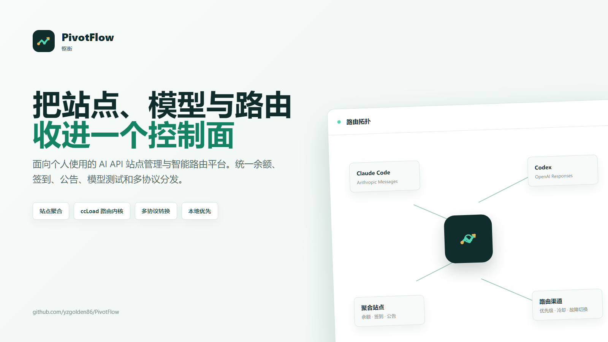
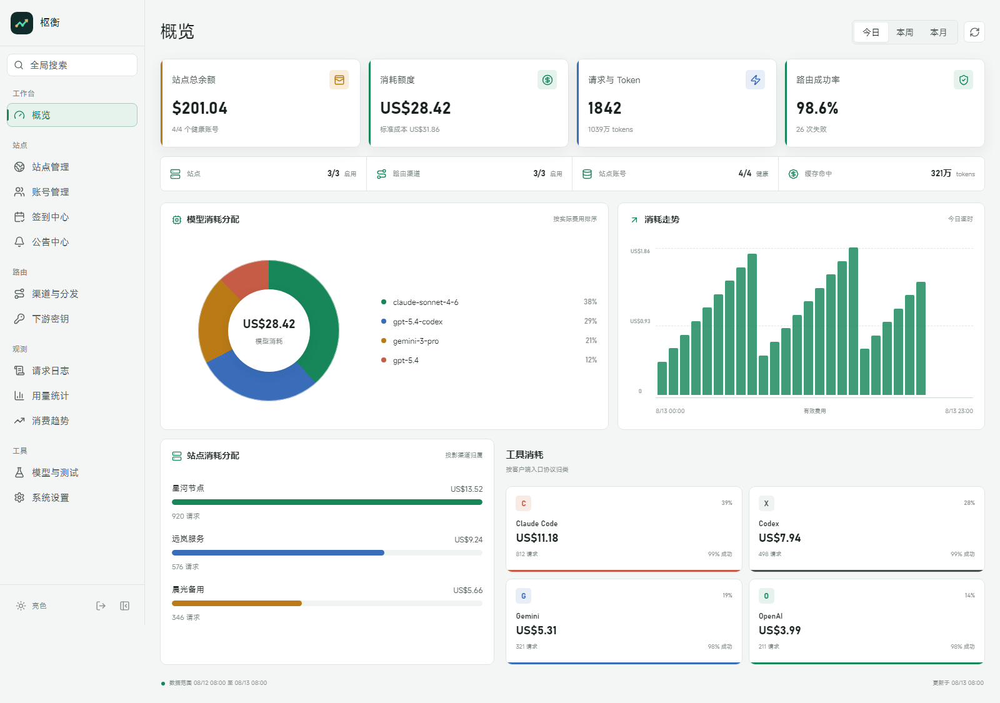
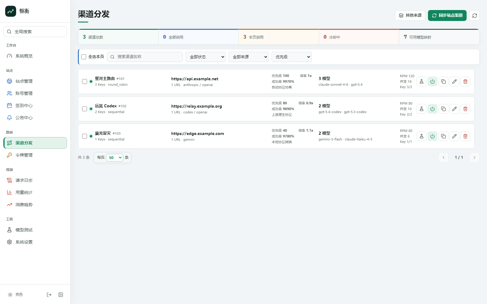

个人 AI API 控制面
一个界面管理站点，
一套路由连接所有工具。
统一余额、签到、公告和模型测试，保留 PivotFlow 的多 Key、多 URL、冷却、故障切换与协议转换。PivotFlow 专注个人高频工作流，不堆叠企业级复杂度。

全局概览
余额和真实消耗放在同一张图上
按模型、站点和客户端查看请求与费用。Claude Code、Codex、Gemini 和 OpenAI 的入口消耗清晰分开。
站点控制面账号 · 余额 · 签到 · 公告
路由数据面优先级 · 冷却 · 故障切换
多协议Anthropic · OpenAI · Gemini · Codex
本地优先SQLite 起步，可切换 MySQL / PostgreSQL

PivotFlow 核心路由
站点账号同步为路由渠道
发现模型与 API Key 后创建来源绑定的渠道。特殊上游仍可手工配置多 URL、多 Key、模型映射和协议模式。
快速开始
用 Docker Compose 启动
cp .env.docker.example .env
# 设置 PIVOTFLOW_PASS
docker compose -f docker-compose.build.yml up -d --build